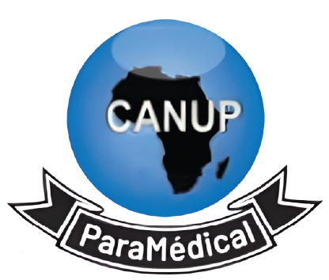
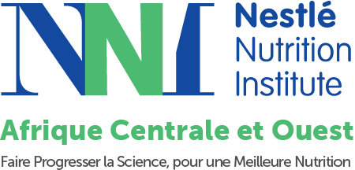

Certificat de participation
INStitut nestlé nutritrion

Nous certifions que
Mme Shinmun Monique
a participé avec succès au Cours Africain de Nutrition Pédiatrique (CANUP), en ligne, au profit des Professionnels de la Santé de la Région Afrique Centrale et Quest, organisé du 1 er Novembre 2022 au 31 Mars 2023